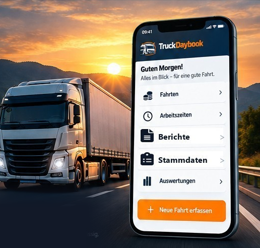
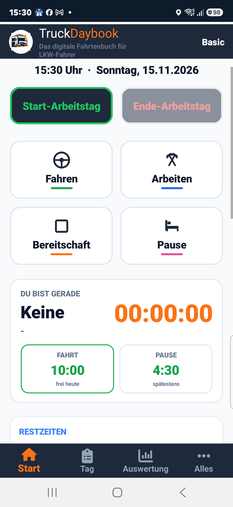
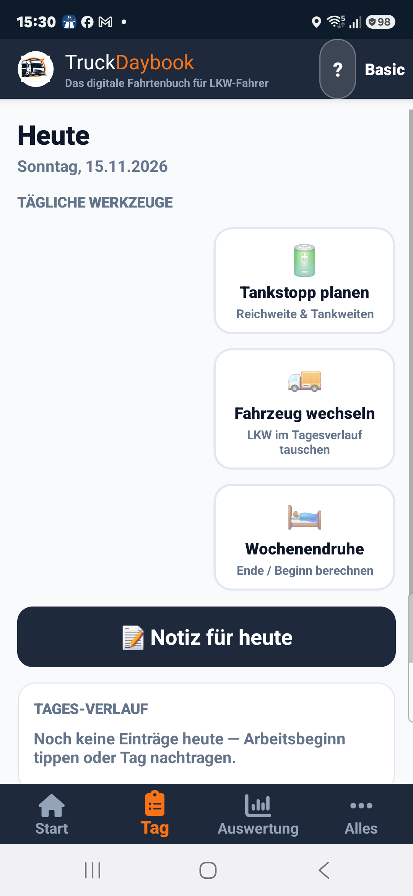
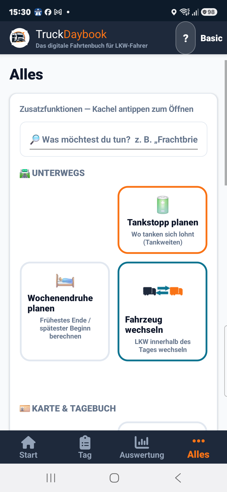

Fahren, Arbeiten, Bereitschaft, Pause – ein Tippen statt Zettelwirtschaft. GPS erkennt Fahrten automatisch, Berichte exportierst du als PDF – alles komplett offline auf deinem Handy.

TruckDaybook wird nicht von einem Konzern für „den Markt" gebaut, sondern von einem Fernfahrer gemeinsam mit denen, die die App täglich benutzen. Fehlermeldungen und Wünsche aus der Praxis kommen über die Telegram-Community direkt zum Entwickler — werden öffentlich besprochen, damit eine Antwort allen hilft — und landen im nächsten Update.
Kurz: Nutzer sind keine Kunden, sondern Mitentwickler.
Arbeitstag, Tätigkeiten (Fahren/Arbeiten/Bereitschaft/Pause), Urlaub/Krankheit und Ereignisse per Tipp aufzeichnen — mit Auto-Fahrerkennung per GPS, damit kein Umschalten vergessen wird.
EU-Lenk- und Ruhezeiten (VO 561/2006) live überwachen und warnen — Restlenkzeit, nächste Pause, Kompensationen. Beim Fahren nur das Nötigste groß zeigen, keine Ablenkung.
Tages-, Wochen- und Monatsberichte als PDF, Stundenzettel mit Zuschlägen, Spesen/Diäten, Frachtbrief, Tankjournal, Wochenendruhe-Planer — die Büroarbeit des Fahrers in einer App.
Fahrerkarte per Bluetooth-Leser einlesen und mit dem eigenen Tagebuch abgleichen — der Fahrer sieht Differenzen, bevor es der Kontrolleur tut.
Entwickelt von Fahrern für Fahrer – keine Bürosoftware, sondern ein Werkzeug für die Straße.
Automatische Fahrerkennung per GPS, Tacho- und Kilometerstände, gespeicherte Fahrstrecken.
Arbeitstag starten und beenden, Fahren, Arbeiten, Bereitschaft und Pause per Tippen erfassen.
Grenzübertritt, Fähre/Zug, Beladen, Wartezeit u. a. nachtragen – mit Land und Kilometerstand, wie am Fahrtenschreiber.
Deine Woche als Diagrammstreifen im Tachographen-Design – alle Tätigkeiten auf einen Blick.
Schicht-, Monats- und EU-Berichte direkt aus deinen Daten – als PDF teilen oder drucken.
Monatswerte von der Abrechnung eintragen – die App prüft Mindestlohn (DE) oder Kollektivvertrag (AT) und rechnet deinen tariflichen Mindestanspruch aus den Fahrzeiten hoch.
Verbleibende Lenkzeit, Ruhezeiten und Nachtarbeit – mit Hinweisen auf Ausgleichsruhe.
Fahrer und Fahrzeug einmal anlegen – mit Erinnerung an Karten-, Tacho- und TÜV-Fristen.
Verschlüsseltes Backup direkt auf dem Gerät – für den Handywechsel, ganz ohne Cloud.
Direkt aus der TruckDaybook Basis – das siehst du auch auf deinem Handy.



„Mehr Zeit für das, was wirklich zählt – die Straße."
Kein Abo, keine versteckten Kosten, keine Werbung – TruckDaybook bleibt dauerhaft kostenlos.
Alles wird lokal auf deinem Handy gespeichert – kein Benutzerkonto nötig.
Entwickelt aus der Praxis – gebaut von Fahrern, verbessert durch Feedback echter Berufskraftfahrer.
TruckDaybook Basis ist offiziell veröffentlicht – kostenlos laden, losfahren.
🚛 Bei Google Play laden Android · Play StoreFragen zur App? ✉ Schreib uns
Die TruckDaybook Basis direkt im Browser ausprobieren – ohne Download, ohne Anmeldung.
Klick dich durch: Arbeitstag starten → Tätigkeit → Untertätigkeit. Auch auf dem Handy im Browser nutzbar.
Nein – dauerhaft kostenlos. Kein Abo, keine versteckten Kosten, keine Werbung.
Ja, komplett. Alle Daten werden lokal auf deinem Handy gespeichert – du brauchst unterwegs keine Verbindung.
Nein. Deine Fahrten, Zeiten und Stammdaten bleiben ausschließlich auf deinem Gerät. Es gibt kein Benutzerkonto und keinen Server.
Nein – TruckDaybook ersetzt keine gesetzlich vorgeschriebenen Aufzeichnungen. Der Tachograph dokumentiert das Fahrzeug, TruckDaybook dokumentiert dich als Fahrer: Lenkzeit, Arbeitszeit, Bereitschaft und Pause als persönlichen Nachweis – inklusive der Zeiten, die der Tacho nicht sieht.
Automatisch per GPS – du musst nichts händisch aufzeichnen. Wenn du losfährst, meldet sich die App von selbst (Benachrichtigung + Hinweisfenster); ein Tipp auf „Fahren starten" genügt. Ampelstops und kurze Staus unterbrechen die Fahrt dabei nicht – bewusst, denn der Tacho springt nach einer Minute um, dein Arbeitstag fühlt sich anders an. Kurzfahrten auf dem Firmengelände oder ohne GPS-Empfang erfasst du per Tipp. TruckDaybook ist bewusst keine Sekunden-genaue Tacho-Aufzeichnung, sondern ein digitales Fahrtenbuch mit Lenkzeitkontrolle.
Die Fahrerkarte enthält nur die Tacho-Lenkzeiten. Was sie nicht enthält: deine komplette Arbeitszeit mit Be-/Entladen, Bereitschaft und sonstigen Tätigkeiten. TruckDaybook liefert dir daraus Stundenzettel, Tages-, Wochen- und Monatsberichte als PDF, eine Spesen- und Urlaubsübersicht und den Überblick über deine Lenk- und Ruhezeiten – hilfreich bei Lohnabrechnung, Kontrolle oder im Streitfall.
Ja. Unter Stammdaten → Monatswerte tippst du das Steuerbrutto deiner Abrechnung ein – die App rechnet daraus sofort deinen effektiven Stundenlohn. In Deutschland prüft sie den gesetzlichen Mindestlohn mit dem historisch richtigen Satz des Monats, in Österreich den Speditions-KV (Mindestlohn nach Verwendungsgruppe und Betriebszugehörigkeit). Der Stundenzettel zeigt zusätzlich eine Soll-Abrechnung: was dein Zettel aus den aufgezeichneten Stunden mindestens enthalten müsste – inklusive Überstunden-Aufschlüsselung und Fehlbetrag in Euro. Eine vereinfachte Plausibilitätsprüfung, keine Lohnverrechnung – aber ein starkes Werkzeug, wenn du deine Abrechnung kontrollieren willst.
Aktuell entwickeln wir für Android. Eine iOS-Version ist geplant – wenn du auf dem iPhone testen möchtest, melde dich gern per E-Mail an info@truckdaybook.de, dann sagen wir Bescheid, sobald die iOS-Testrunde startet. Bis dahin kannst du die App auch im Browser ausprobieren – siehe Interaktive Vorschau oben.
Fragen, Anregungen oder Probleme? Schreib uns einfach – wir lesen jede Mail und antworten persönlich.
Direkt vom Entwickler – von Fahrer zu Fahrer:
Die Fahrer-Community findest du direkt in der App.